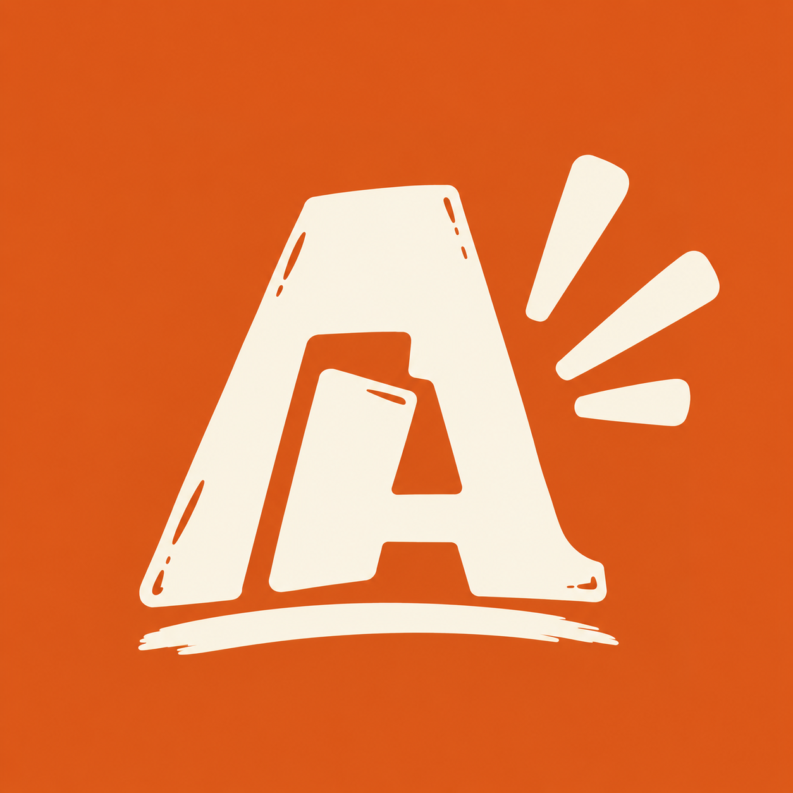
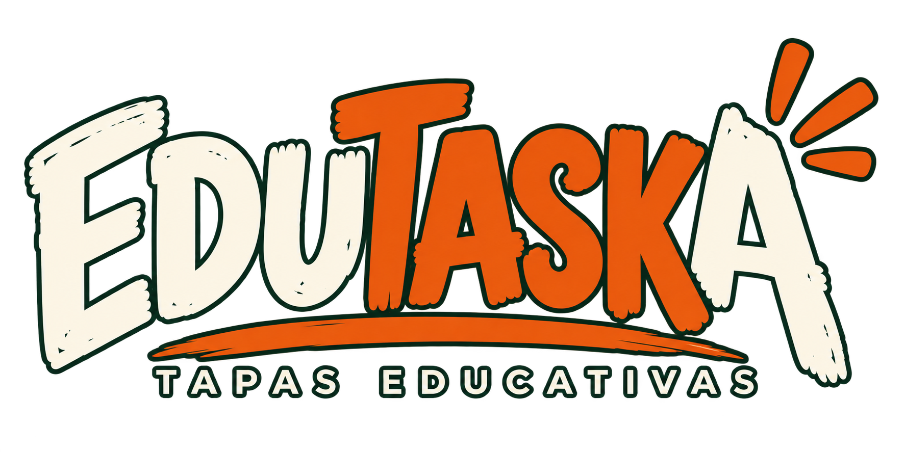
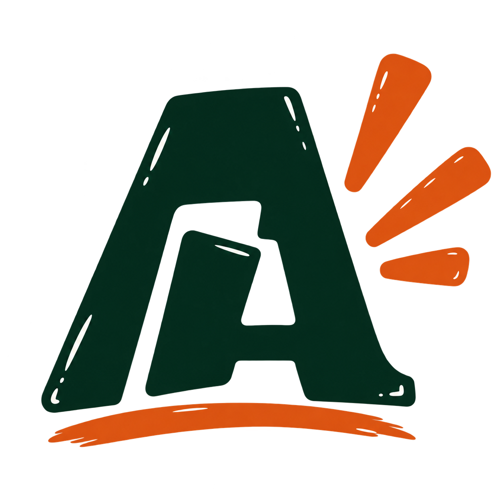

Tu proyecto, al grano.
Explica a quién iba dirigido, qué necesidad atendía y qué pueden llevarse otros profes.

EduTaskaTapas educativas
Experiencias reales de aula, en formato breve, cercano y sin formalismos. Profes que comparten lo que hacen y se quedan a conversar.
Quiero ser TaskerTodas las etapas. Todas las asignaturas.
EduTaska es un encuentro pequeño entre docentes para contar experiencias de aula, preguntar cómo se hicieron y conocer a las personas que hay detrás.
Entre presentación y presentación hay espacio para conversar, compartir una consumición y encontrar complicidades. Infantil, Primaria, Secundaria, Bachillerato, FP: la mesa está abierta.
El encuentro se vive allí. Las intervenciones no se publicarán en diferido en YouTube.

No hace falta una comunidad de seguidores. Hace falta una experiencia concreta y ganas de compartir qué hiciste, qué aprendiste y cómo puede aprovecharlo otro docente.
Explica a quién iba dirigido, qué necesidad atendía y qué pueden llevarse otros profes.
Nos interesan las decisiones, los materiales y también lo que cambiarías al repetirlo.
Ven a contar tu experiencia y a conocer las de otros. Los Taskers participan gratis.
Convocatoria abierta. Ya puedes presentar tu propuesta. La selección se realizará antes de Navidad.
Presentar mi propuestaPublicaremos la agenda de Taskers antes de abrir las entradas. Así podrás conocer los proyectos y decidir venir.
Entradas todavía no disponiblesEntrada anticipada con consumición incluida.
Precio orientativo pendiente de confirmar.
El pago se realizará por transferencia a la cuenta del Alfonso XII. Al abrir las inscripciones facilitaremos los datos y las instrucciones para confirmar tu plaza.
Sí. EduTaska está abierta a todas las etapas y asignaturas. Buscamos experiencias que tengan algo que aportar a otros docentes.
No. Quienes presentan los proyectos participan gratis.
Cuando esté cerrada y publicada la agenda de Taskers. La compra será anticipada y la plaza se confirmará al comprobar el pago.
No habrá publicación de las intervenciones en diferido en YouTube. El contacto y la conversación presencial son parte esencial del encuentro.
Estamos preparando la primera edición en San Lorenzo de El Escorial. Publicaremos el espacio y la dirección cuando estén confirmados.